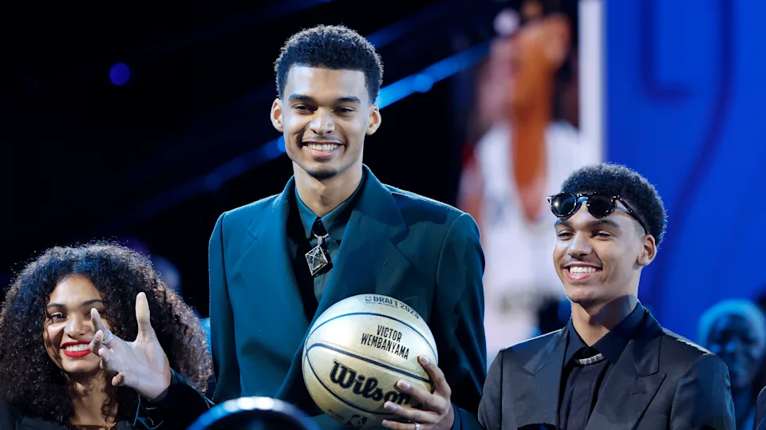

Os Principais draftados e suas primeiras impressões
O draft da NBA é um evento anual no qual os trinta times da National Basketball Association podem recrutar jogadores que são elegíveis para ingressar na liga.
Victor Wembanyama
Ele foi a 1ª escolha no Draft da NBA de 2023, é considerado um dos melhores prospectos da história do basquete. Nascido em Le Chesnay, na França, Wembanyama iniciou sua carreira profissional no Nanterre 92 do LNB Pro A em 2019.Wembanyama assinou com o Metropolitans 92 e assumiu um papel de liderança. Ele foi nomeado LNB All-Star em duas ocasiões, vencendo o All-Star Game MVP uma vez, e duas vezes LNB Pro A Best Young Player.
Brandon Miller
Brandon Jordan Miller, é um basquetebolista norte-americano que atua como ala ou ala-armador. Atualmente defende o Charlotte Hornets, sendo a 2ª escolha do Draft da NBA de 2023 Na temporada regular tem como média de 13 pontos. Com 31 minutos de média
Na temporada regular tem como média de 13 pontos. Com 31 minutos de média
Scott Henderson
Atualmente defende o Portland Trail Blazers, sendo a 3ª escolha do Draft da NBA de 2023.
Na temporada regular tem 28 minutos de média em 5 jogos, e contribuiu com 8.8 de média para pontos.